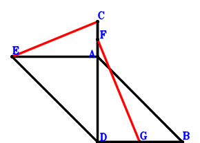
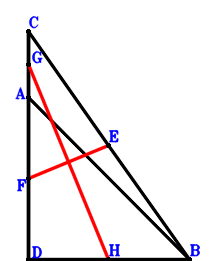

Exercise 15： Let EDBA be a parallelogram. G, F are the midpoints of DB, CA, respectively. AB=CD. Prove that EC⊥FG.

\(\because \) EDBA is a parallelogram \(\therefore \small\overrightarrow{BE}=\small\overrightarrow{BA} + \small\overrightarrow{BD}\).\(\because \) F is the midpoint of CA \(\therefore \small\overrightarrow{BF}=\dfrac{\small\overrightarrow{BA}}{2} + \dfrac{\small\overrightarrow{BC}}{2}\).\(\because \) G is the midpoint of DB \(\therefore \small\overrightarrow{BG}=\dfrac{\small\overrightarrow{BD}}{2}\).\(\because \) AB=CD \( \therefore\small\overrightarrow{BA}^{2} - \small\overrightarrow{DC}^{2}=\small\overrightarrow{BA}^{2} - \left(\small\overrightarrow{BC} - \small\overrightarrow{BD}\right)^{2}=\small\overrightarrow{BA}^{2} - \small\overrightarrow{BC}^{2} + 2 \small\overrightarrow{BC} \cdot \small\overrightarrow{BD} - \small\overrightarrow{BD}^{2}=0.\)In conclusion, \(\small\overrightarrow{CE} \cdot \small\overrightarrow{FG}=\left(- \small\overrightarrow{BC} + \small\overrightarrow{BE}\right) \cdot \left(- \small\overrightarrow{BF} + \small\overrightarrow{BG}\right)=\left(- \dfrac{\small\overrightarrow{BA}}{2} - \dfrac{\small\overrightarrow{BC}}{2} + \dfrac{\small\overrightarrow{BD}}{2}\right) \cdot \left(\small\overrightarrow{BA} - \small\overrightarrow{BC} + \small\overrightarrow{BD}\right)=- \dfrac{\small\overrightarrow{BA}^{2}}{2} + \dfrac{\small\overrightarrow{BC}^{2}}{2} - \small\overrightarrow{BC} \cdot \small\overrightarrow{BD} + \dfrac{\small\overrightarrow{BD}^{2}}{2}=0\), that is, EC⊥FG.
Exercise 21： Let G, E, F, H be the midpoints of AC, CB, AD, DB, respectively. AB=DC. Prove that FE⊥GH.

\(\because \) E is the midpoint of CB \(\therefore \small\overrightarrow{BE}=\dfrac{\small\overrightarrow{BC}}{2}\).\(\because \) F is the midpoint of AD \(\therefore \small\overrightarrow{BF}=\dfrac{\small\overrightarrow{BA}}{2} + \dfrac{\small\overrightarrow{BD}}{2}\).\(\because \) G is the midpoint of AC \(\therefore \small\overrightarrow{BG}=\dfrac{\small\overrightarrow{BA}}{2} + \dfrac{\small\overrightarrow{BC}}{2}\).\(\because \) H is the midpoint of DB \(\therefore \small\overrightarrow{BH}=\dfrac{\small\overrightarrow{BD}}{2}\).\(\because \) AB=DC \( \therefore\small\overrightarrow{BA}^{2} - \small\overrightarrow{DC}^{2}=\small\overrightarrow{BA}^{2} - \left(\small\overrightarrow{BC} - \small\overrightarrow{BD}\right)^{2}=\small\overrightarrow{BA}^{2} - \small\overrightarrow{BC}^{2} + 2 \small\overrightarrow{BC} \cdot \small\overrightarrow{BD} - \small\overrightarrow{BD}^{2}=0.\)In conclusion, \(\small\overrightarrow{EF} \cdot \small\overrightarrow{GH}=\left(- \small\overrightarrow{BE} + \small\overrightarrow{BF}\right) \cdot \left(- \small\overrightarrow{BG} + \small\overrightarrow{BH}\right)=\left(- \dfrac{\small\overrightarrow{BA}}{2} - \dfrac{\small\overrightarrow{BC}}{2} + \dfrac{\small\overrightarrow{BD}}{2}\right) \cdot \left(\dfrac{\small\overrightarrow{BA}}{2} - \dfrac{\small\overrightarrow{BC}}{2} + \dfrac{\small\overrightarrow{BD}}{2}\right)=- \dfrac{\small\overrightarrow{BA}^{2}}{4} + \dfrac{\small\overrightarrow{BC}^{2}}{4} - \dfrac{\small\overrightarrow{BC} \cdot \small\overrightarrow{BD}}{2} + \dfrac{\small\overrightarrow{BD}^{2}}{4}=0\), that is, FE⊥GH.
Exercise 22： Let DCEB and DCBF be parallelograms. BA=CD. Prove that EA⊥AF.